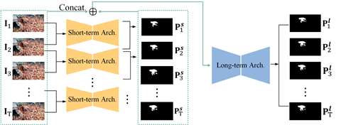

|
ADJUNCT LECTURER,
|
|
|
|
My research sits at the intersection of 3D vision and machine learning, aiming to build systems that can perceive, reconstruct, and reason about the geometry of the real world, from operating rooms to open scenes, and act on that understanding. This spans dense geometry estimation and neural architecture search, video and multimodal reasoning, and embodied agents that turn perception into action.
|

Robotic Surgery & Surgical Scene Understanding
Recovering accurate, temporally consistent 3D geometry of deforming tissue from endoscopic and laparoscopic video, and registering pre- and intra-operative imaging, to support safer, more autonomous robotic surgery.
Representative work: EndoSurf (MICCAI 2023, Oral) · HybridStereoNet (MICCAI 2022) · ColonAdapter (RA-L 2025) · XPos3R (ECCV 2026)

Stereo Matching, 3D Reconstruction & Generation
Automatically searching neural architectures for dense stereo matching, and fusing sparse LiDAR with stereo cues for robust, generalizable depth. This work has extended more recently to diffusion-based tomographic reconstruction and text-driven 3D scene generation.
Representative work: LEAStereo (NeurIPS 2020) · LidarStereoNet (CVPR 2019) · DiffNR (AAAI 2026) · RoomPlanner (ECCV 2026)

Video Understanding & Multimodal Reasoning
Modelling short- and long-term motion cues for video camouflaged object detection, and building multimodal agents that reason over video and retain stateful experience across long-horizon tasks.
Representative work: SLT-Net (CVPR 2022) · Video-Thinker (under review) · MuSEAgent (under review)

Embodied AI & Vision-Language-Action
Developing vision-language-action models and reinforcement learning methods that let quadruped and manipulator robots act rationally, scale with data, and generalize across tasks and embodiments.
Representative work: MoRE (ICRA 2025) · RationalVLA (TMech 2025)